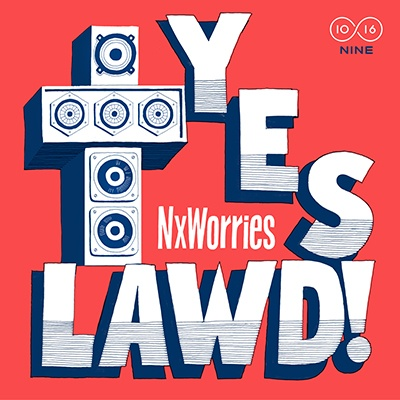
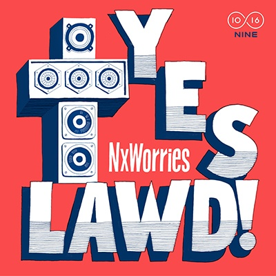
3D造云平台
3D造是一个供众多3D创客汇聚、学习、交流和分享的平台，这里汇聚海量高品质的3D数据模型，通过在线3D工具，为专业设计师提供360度全方位的支持，让3D打印充分辅助设计工作。同时，为大众用户提供技术支持，即使不会应用3D设计软件，也可以轻松享受3D打印带来的便捷。3D造可以让每一位普通用户或创客均可将自己的设计作品通过3D打印服务变现，整合软件与硬件，打造创新氛围的社区。
项目背景
如今3D打印红遍了大江南北，不管是什么行业，想要制作什么样的个性产品，都可以利用3D打印技术实现。但是由于3D打印技术的前沿性，目前市场上服务工厂店质量参差不齐：
“我在一家工厂打印了数据模型，结果创意被剽窃了”
“之前做的3D打印成品太差了，完全不是我要的效果”
“我想设计属于自己独一无二的3D模型，但是我不会用那些软件”
……
爱好者们对3D打印很有兴趣，但是由于对软件技能不足只能望而却步；创客们有数据模型却苦于找不到靠谱的服务工厂，即使找到了，价格虚高不说，还有剽窃创意的危险；企业倒是可以找到服务工厂，但不管是传统企业还是创新企业，对打印材质及工艺都有极高的要求，普通服务工厂不一定能满足要求。
我们需要一个解决方案
让3D打印如网购般便捷
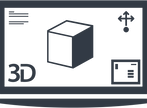设计方向探索
为了更好地了解目标用户，我们发起了一次问卷调查，并针对调查结果进行了一次用户访谈，深入了解用户的需求和痛点，寻找改进的机会。
另外，由于产品的平台化发展特性，我们选取了意造网、魔猴、未来工厂等平台化产品进行了分析，再结合之前版本的积累与项目的实际情况，我们为这次改版定了三个方向：
- 核心功能突出，辅助功能入口统一
- 信息层级清晰，架构层级扁平化
- 设计风格跨平台统一
信息：张明/31岁/工业设计师/精通大多数设计类软件
行为：每天早上阅读设计相关资讯/乐于分享自己的想法，经常与朋友沟通交流
目标：分享原创3D模型／传播个人品牌/赚取工作之外的收益
期望：更方便快速的打印出自己设计的模型／与志同道合的的朋友探讨心得
痛点：找不到靠谱的3D打印工厂/担心创意被剽窃
信息：刘云/22岁/大学生/设计爱好者
行为：在社交网络上十分活跃/关注最新潮流动态/关注很多设计大牛的微博
目标：个性化定制属于自己的产品/了解基础的3D打印知识/学习3D软件的基础用法
期望：找到心仪的3D数据模型/找到可以一起讨论学习的伙伴
痛点：不知道如何使用3D建模软件/找不到心仪的数据模型
解决方案
基于前面的用研及竞品分析结果，我们与产品经理确定好核心流程，快速在纸上绘制好产品草图，并与开发同学进行了几次项目会议，考虑到我们对现有产品的理解，我们决定将其剥离到它的核心，围绕它的最常用的功能来定位整个产品.：
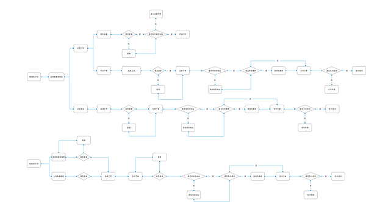在项目早期，我们会在纸上画一些草图沟通想法，确定大方向，后期确认了需求后，以原型图的形式产出了关键的功能性页面，确定基本功能点，并做细节上的动态效果展示。原型图还可以用来辅助进行详细设计和开发的评审，同时细化功能，每天迭代更新。
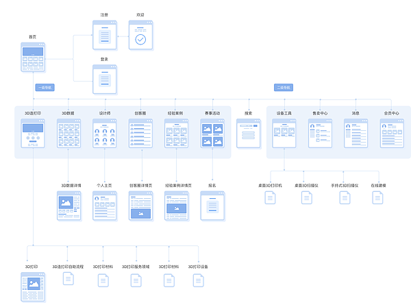 查看交互原型项目总结
项目目前正在开发中，预计3月份完成，所以目前还不能展示太多细节内容，但是通过对已上线的新版首页进行数据埋点，我们发现各模块的数据点击率得到了大幅度的提升，同时从Alexa排名来看，3D造已处于国内3D打印行业的首位，这对我们团队的工作是一个很大的肯定。
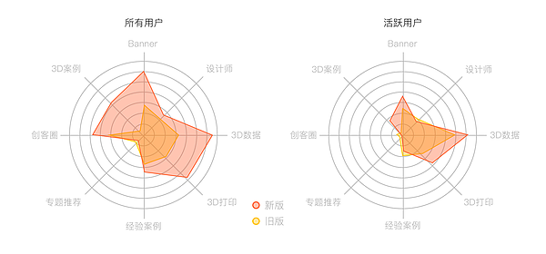新旧版本点击率对比
This:
Link:
早范
现在许多上班族和学生的时间安排都很紧凑，很多时候他们不得不牺牲“早餐这件小事”以获得足够的睡眠。然而，众所周知，不吃早餐会增加许多健康问题的风险。另一方面，即使大家注意到早餐的价值，人们对早餐的选择也是有限的，早范作为一个早餐配送平台，可以给工作节奏紧凑的上班族们提供新鲜、方便、丰富的早餐外卖，让他们在早餐上有更多选择。
用户研究
高节奏的城市生活使得时间管理更加重要。我们发起了一份关于上班族们对于早餐态度的问卷，回收了59份有效问卷，然后对5位用户进行了访谈，以了解人们对现有早餐的体验与想法：
- 在那些没有坚持天天吃早饭的人群中，仅有41.3%的人表示愿意牺牲半个小时的睡眠时间来吃早饭
- 越来越多人偏向于叫外卖，特别是在他们加班或者其他忙碌的时候
- 他们点餐时，最关心的是食物的新鲜度，送达时间以及价格

为了探索现实中会遇到的问题，我们对6个潜在用户进行了送餐服务。从我们的观察和一些事后的反馈，我们发现大多数用户希望能降低配送费以及希望菜单里有更多的早餐选择。
接下来我们团队进行了头脑风暴，以简化最终用户体验为目标，我们确定了大致的方向：
菜单定制：所有的食谱是早范创建，目前不做特殊定制
派送服务：早范将与特定派送平台合作，为用户带来高效的派送服务
早餐价格：价格符合市场情况，能被绝大多数用户接受与认可
下单时间：用户最晚可以在前一天晚上十点前预订早餐
我们希望为用户提供健康、新鲜的膳食，下单过程简单流畅，体验友好、并且价格合理。
价值定位
我们为用户提供一个简单方便的方式来解决他们的订购早餐问题。我们通过与特定的餐厅合作，为用户提供不同种类的早餐服务，同时收集用户的评价用以改进。用户只需下载早范App，在送餐的前一天晚上10:00前下单，第二天，早范的专业配送人员将会根据客户选择的时间准点地将早餐送到每一位用户的手上。
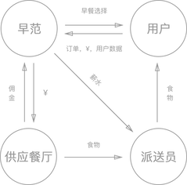用户体验地图
为了更好地了解我们产品的交互和服务设计，我们创建了一个用户体验地图，以可视化的方式展示用户使用我们服务的从开始到结束的过程。
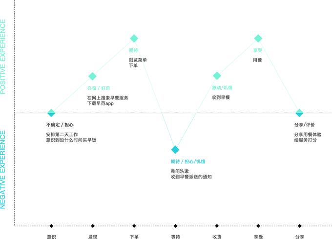解决方案
我们创建线框图来帮助我们设计用户体验，这将是我们的服务的一部分。我们对5个用户进行了几次可用性测试，并基于他们的反馈完善我们的产品。
我们创建线框图来帮助我们设计用户体验，这将是我们的服务的一部分。我们对5个用户进行了几次可用性测试，并基于他们的反馈完善我们的产品。
This:
Link:
柚理财
柚理财作为一个可以为用户提供低门槛高收益安全便捷的理财服务的金融平台，经历近一年多时间的升级优化与业务路线的调整，承载的信息越来越多、功能越来越丰富，原有的框架设计已经不能很好的支持现有的产品功能了。我们打算在新版本针对现有问题重新定位理财端用户平台，并制定一条合理可行的产品演进路线并设计出目前所处阶段的全平台界面体验。

需求分析
为了发掘成熟的个人财富管理方法和大众理财产品，我们首先将目光投向了金融业发展更早的国外。除了将 Betterment、Personal Capital、LendingClub等智能投资管理和个人财物管理平台细分为八种不同类型的公司分别进行研究，设计团队还在社交媒体上收集真实用户的使用体验，在财经和评测网站以及新闻报道中获取广泛的金融知识，从专业书籍和理财专家的博客中寻找对设计有帮助的信息。当看到越来越多的用户说：
“I don’t adhere to the traditional idea of budgeting.”
“I need a program that caters to my needs of an overarching financial picture and long-term investment plan.”
“I need holistic financial planning.”
我们意识到，人们对理财产品的期望正在发生转变。人们拥有一定的理财观念、理财途径和工具，但大部分人仍然缺乏专业的金融知识，投资金额有限，并且对金融机构抱有怀疑态度。
研究国外竞品的同时，我们也在国内进行以专家访谈、用户研究和任务走查为核心的用户研究，了解柚理财用户的财富管理观念和理财现状。
“我觉得理财的目的就是让财富增值、保值。”
“我没有太多的理财概念，只想要跑赢通胀。”
“P2P 尝鲜会买期限短的。”
“知道每天的收益都一样，但还是会去看，看到就很高兴。”
“我选择国外第三方机构主要考虑私密性、稳定性和收益。”
用户画像
我们产品的目标用户最多的都是在30~39这一年龄段，该年龄段的用户特征就是理财资金较充沛，在资产配置中寻求更丰富的组合。20~29这一年龄段为第二大目标用户群体，该群体的特征便是对互联网有广泛的了解，财富处于增长阶段，风险承受能力较强，发展潜力较大。
下面的用户画像，可以非常清楚地看到入门级理财用户和有一定经验理财用户的差异。入门级用户的风险承受能力和对收益性的期望较低，对资金流动性和安全性的要求高。而有经验的用户则有更高的风险承受能力，期望更高的收益，对资金的流动性和安全性的要求较低。
机遇和挑战
通过全方位的用户研究以及竞品分析，我们发现柚理财在平台功能的转变、信任感和安全感的建立、服务个性化与服务升级、用户引导与教育以及产品细节处理上面临很多机遇和挑战。
1.
理财产品用户希望收益处于合理区间，过高的收益反而会让他们觉得不安全。利用设计体现平台对安全的关注或进行实物化的保障等则可以提高用户对平台的信任感。
2.
面对银行较为综合的服务体系，以及会按照不同资产规模区分服务的压力，互联网理财产品应该尽快推出个性化服务。可以根据用户的投资偏好和风险承受能力推荐个性化的资产配比，也可以根据用户的投资行为、交易数据划分用户等级，提供不同的优惠与附加服务。
3.
一位有四年理财经验的已婚妈妈在访谈中提到了一个大多数用户都面临的问题：“买了基金、股票、邮票、银行理财产品等，但主要靠记忆管理”。分散投资型用户缺少有效的统一管理工具，需要第三方资产管理服务。那么未来，引入第三方资产数据，全面管理各类资产成为平台功能转变的一个机遇点。
设计过程
在第一阶段，我们整理出关于产品的大致想法与目标，与产品方确定好核心功能和流程，然后在纸上快速构建产品草图。此外，我们采访了相关领域的专家，如银行家或会计师，他们在金融领域具有专家级的知识和见解，可以给予我们关于产品设计的合理性的反馈。
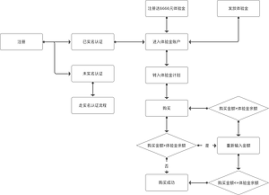体验金转入流程
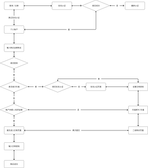标的购买流程
在验证我们的设计后，我们致力于创建一个粘性产品。我们阐述了应用程序的信息架构，并构建了包含我们之前工作的组合元素的中等保真原型。通过连续迭代，评审和用户测试，我们删除和修改了部分功能，并提高了可用性和用户体验。
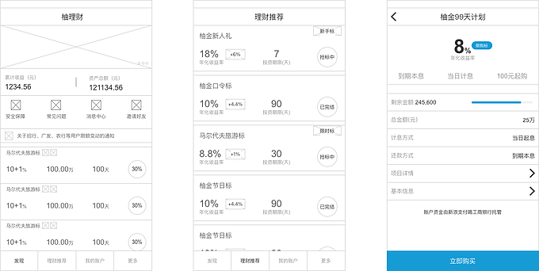我们完成原型设计后，招募了5个用户进行了简单的可用性测试。这使我们能够深入了解如何更好地改进我们的理财产品。然后我们总结测试结果，进行下一步的改进设计。总的来说，用户在我们的原型中发现了大量的价值，这验证了我们的概念和设计方向。
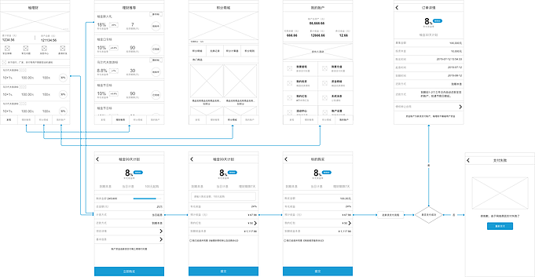A/B 测试
产品上线之后我们对新旧版本进行了A/B测试，以此来验证改版的设计是否合理，事实证明新版本在用户转化率上有了很大的提升。
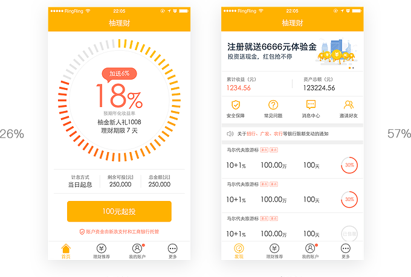成果展示
值得信赖的品牌体验
互联网金融和传统银行相比，先天基因中就缺乏大众的信任。用户普遍存在操作频繁、追求短期利益、对安全感存疑等问题。我们利用设计的方法来帮助用户逐渐建立对品牌的信任感，包括突出资金流动透明性，如交易记录、资产分布、累计收益等。还通过设置安全密码保护、模糊多任务状态等细节丰富用户的安全体验。
足够简单的应用结构
在用户研究中，我们发现有明确理财需求的人年龄普遍在 30岁以上，核心人群年龄更高，他们在设计上非常追求简单直观容易操作。因此，我们精简了底层应用结构，划分为理财与账户两部分内容，产品呈现和操作也更加直接简单。
服务分级和服务个性化
与传统银行相比，互联网金融平台普遍缺乏规范的服务体系和标准。传统银行对于银行用户的划分更细致和成熟，会针对不同层级的用户提供对应的服务和产品。我们提出了互联网金融平台服务分级和服务个性化的概念，并与会员体系结合在一起，帮助平台提高用户忠诚度。
透明的资金流入流出管理
资金的流入流出是金融产品的核心操作流程。柚理财的散标和债券转让产品很受用户欢迎，但许多新标刚刚放出几秒就会被抢购一空。针对用户的这一行为特点，我们设计了快速抢购操作；除此之外，还对投资、退出、充值、提现等流程进行了优化，保证操作安全的基础上尽量减少操作步骤。
This:
Link: